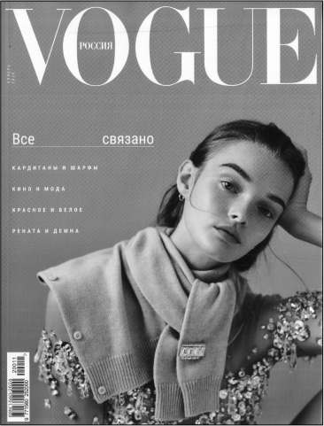
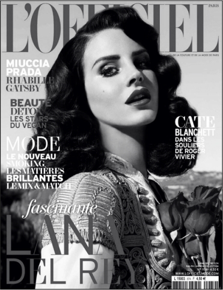
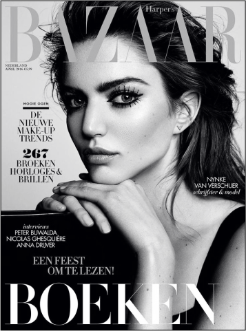

Anglecia Pro Display
Антиква нового стиля
Новая антиква
В отличие от старой антиквы, основаннойна рукописном книжном почерке, новая антиква
стала основываться на геометрических
построениях и «природных пропорциях».
На форму символов повлияло
изобретение в XVII веке остроконечного пера.
Ширококонечное перо
При письме ширококонечным пером толщина линиизависит от направления движения пера: движется
ли перо вверх, вниз или в сторону, что хорошо видно
в буквах М и Н. Перо при письме держат под углом,
поэтому буква О в старой антикве асимметрична.
Остроконечное перо
При письме остроконечным пером, изобретеннымв XVII веке, толщина штриха зависит уже от силы
нажатия на перо, а не от направления его движения.
Это, наряду с прогрессом в работе с металлом,
повлияло на форму букв: они стали более
контрастными и симметричными.
Бумага тоже повлияла на эволюцию антиквы
Металлические наборные шрифты эпох
Ренессанса и барокко (антиква старого
стиля и переходная антиква) создавались
для печати на шершавой бумаге,
доступной в то время.
Новая антиква использовалась
для печати на гладкой блестящей бумаге.
Сильный контраст
Увеличенные капли
Вертикальные оси овальных букв
Полузакрытая форма знаков
Симметричные засечки
В общей сложности Anglecia Pro Display
содержит 14 начертаний,
каждое из которых поддерживает
большое количество языков.
В прямых начертаниях кириллица содержит
OpenType-альтернативы для придания набору более мягкой или более угловатой текстуры.
Применение
Раньше новые антиквы, как и старинные,
часто использовали для набора книг,
журналов и ежедневных газет.
В СССР продолжала широко использоваться
вплоть до конца 80-х годов, особенно
для научной и технической литературы.
В наше время такие шрифты
используют для заголовков журналов
и газет, так как в основном тексте они
трудно читаемы из-за высокой
контрастности и детализации


